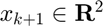
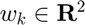
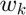
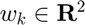
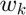
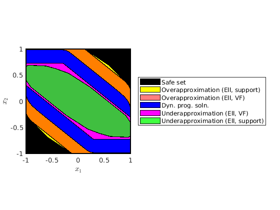
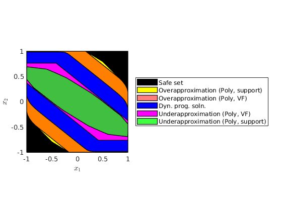

Lagrangian Approximations for the Stochastic Reachability of a Target Tube
This example will demonstrate how to use the SReachTools toolbox to compute over and under approximations for the stochastic reachability of a target tube via Lagrangian methods.
Contents
- Lagrangian Methods
- Problem Definition
- Viability problem as a stochastic reachability of a target tube problem
- Lagrangian approximation for stochastic reachability of a target tube
- Dynamic programming solution
- Simulation times --- Lagrangian approximation is much faster than dynamic programming
- Plotting all the sets together
Lagrangian Methods
Lagrangian methods perform computations with sets using operations like unions, intersection, Minkowski addition/differences, etc. This computation using set operations can be used to approximate (either over or under) the stochastic reachability of a target tube problem. We will demonstrate that this approach while being be approximative can outperform the current state-of-the-art dynamic programming solution in terms of computation time.
Advantages:
- No gridding, which partially evades the curse of dimensionality
- Provides verification for closed-loop feedback strategies
Disadvantages:
- Using Polyhedral representation, must solve the vertex-facet enumeration problem, limiting computations to ~4 dimensional systems
- Does not provide an explicit control policy, only verifies the existence
The theory for this approach can be found in
- J. D. Gleason, A. P. Vinod, M. M. K. Oishi, "Underapproximation of Reach-Avoid Sets for Discrete-Time Stochastic Systems via Lagrangian Methods," in Proceedings of the IEEE Conference on Decision and Control, 2017.
- J. D. Gleason, A. P. Vinod, M. M. K. Oishi, "Underapproximation of Reach-Avoid Sets for Discrete-Time Stochastic Systems via Lagrangian Methods," in Proceedings of the IEEE Conference on Decision and Control, 2017
This example is part of the SReachTools toolbox. License for the use of this function is given in https://github.com/unm-hscl/SReachTools/blob/master/LICENSE.
% Prescript running: Initializing srtinit, if it already hasn't been initialized close all;clearvars;srtinit;srtinit --version;
SReachTools version 1.2.26
Problem Definition
In this example we will look at the viability problem for a double integrator. The system dynamics are:
![$$ x_{k+1} = \left[ \begin{array}{cc} 1 & T \\ 0 & 1 \end{array}\right]
x_{k} + \left[\begin{array}{c} \frac{T^{2}}{2} \\ T \end{array}\right]
u_{k} + w_{k}$$](dIntSReachSetLag_eq03203775996097170917.png)
where  is the state,  is the input, and  is the disturbance. The following code defines this system with  as an i.i.d. Gaussian disturbance with mean
is the input, and  is the disturbance. The following code defines this system with  as an i.i.d. Gaussian disturbance with mean ![$[0, 0]^{\top}$](dIntSReachSetLag_eq16230577049557160276.png) and variance
and variance  .
.
example parameters
T = 0.25; % define the system sys = getChainOfIntegLtiSystem(2, ... T, ... Polyhedron('lb', -0.1, 'ub', 0.1), ... RandomVector('Gaussian', zeros(2,1), 0.001*eye(2)));
Viability problem as a stochastic reachability of a target tube problem
We examine the viability problem in which we are interested in staying in a set of safe states. In this example the safe set is  . The stochastic reachability of a target tube problem posed as a viability problem by constructing a target tube in which all sets in the tube are the safe set.
. The stochastic reachability of a target tube problem posed as a viability problem by constructing a target tube in which all sets in the tube are the safe set.
time_horizon = 5; % safe set definition safe_set = Polyhedron('lb', [-1, -1], 'ub', [1, 1]); % target tube definition target_tube = Tube('viability', safe_set, time_horizon); % probability threshold desired beta = 0.8; % Plotting of target tube figure() hold on for time_indx = 0:time_horizon target_tube_at_time_indx = Polyhedron('H',[target_tube(time_indx+1).A,zeros(size(target_tube(time_indx+1).A,1),1), target_tube(time_indx+1).b], 'He',[0 0 1 time_indx]); plot(target_tube_at_time_indx, 'alpha',0.25); end axis([-1 1 -1 1 0 time_horizon]); box on; grid on; xlabel('x'); ylabel('y'); zlabel('time'); title('Target tube'); axis equal;

Lagrangian approximation for stochastic reachability of a target tube
For the Lagrangian methods we compute robust and augmented effective target sets---for the under and overapproximations, respectively. For this computation we need to convert the Gaussian disturbance into a bounded distrubance set which will satisfy the required conditions detailed in the aforementioned papers. We do this here for a an 0.8 probability with the given target tube.
There are several ways to create bounded disturbance sets. Here, we formulate a bounded disturbance by creating a polyhedral approximation of an ellipsoid through random direction choices.
bounded set for Lagrangian
fprintf('Setting up options for lag-under with bound_set_method: ellipsoid\n'); timerVal=tic; n_dim = sys.state_dim + sys.input_dim; luOpts = SReachSetOptions('term', 'lag-under', 'bound_set_method', ... 'ellipsoid', 'system', sys, 'n_underapprox_vertices', 2^n_dim*10+2*n_dim,... 'verbose',1); options_time = toc(timerVal); timerVal=tic; [luSet, extra_info] = SReachSet('term', 'lag-under', sys, 0.8, target_tube,... luOpts); lagrange_under_time = toc(timerVal);
Setting up options for lag-under with bound_set_method: ellipsoid Spreading 86 unit-length vectors in 3-dim space Analyzing 10 unit-length vectors in first quadrant 1. Setting up the CVX problem... 1 | 2 | 3 | 4 | 5 | 6 | 7 | 8 | 9 | 10 | Solving the CVX problem...done Status: Solved Sum of slack: 1.807e-12 (< 1.000e-08) Change in opt cost: 2.432e-01 (< 1.000e-05) 2. Setting up the CVX problem... 1 | 2 | 3 | 4 | 5 | 6 | 7 | 8 | 9 | 10 | Solving the CVX problem...done Status: Solved Sum of slack: 1.212e-09 (< 1.000e-08) Change in opt cost: 1.044e-01 (< 1.000e-05) 3. Setting up the CVX problem... 1 | 2 | 3 | 4 | 5 | 6 | 7 | 8 | 9 | 10 | Solving the CVX problem...done Status: Solved Sum of slack: 1.646e-09 (< 1.000e-08) Change in opt cost: 1.260e-02 (< 1.000e-05) 4. Setting up the CVX problem... 1 | 2 | 3 | 4 | 5 | 6 | 7 | 8 | 9 | 10 | Solving the CVX problem...done Status: Solved Sum of slack: 5.479e-11 (< 1.000e-08) Change in opt cost: 1.057e-03 (< 1.000e-05) 5. Setting up the CVX problem... 1 | 2 | 3 | 4 | 5 | 6 | 7 | 8 | 9 | 10 | Solving the CVX problem...done Status: Solved Sum of slack: 8.004e-11 (< 1.000e-08) Change in opt cost: 1.202e-05 (< 1.000e-05) 6. Setting up the CVX problem... 1 | 2 | 3 | 4 | 5 | 6 | 7 | 8 | 9 | 10 | Solving the CVX problem...done Status: Solved Sum of slack: 6.804e-10 (< 1.000e-08) Change in opt cost: 1.030e-08 (< 1.000e-05) Completed spreading the vectors! Computing Lagragian under approximation Time_horizon: 5 Computation for time step: 4 Computation for time step: 3 Computation for time step: 2 Computation for time step: 1 Computation for time step: 0
tic; loOpts = SReachSetOptions('term', 'lag-over', 'bound_set_method', 'polytope',... 'verbose', 1, 'template_polytope',... Polyhedron('lb',-ones(sys.dist.dim,1),'ub',ones(sys.dist.dim,1))); loSet = SReachSet('term', 'lag-over', sys, 0.8, target_tube, loOpts); lagrange_over_time = toc();
Computing Lagragian over approximation Time_horizon: 5 Computation for time step: 4 Computation for time step: 3 Computation for time step: 2 Computation for time step: 1 Computation for time step: 0
Now we can compute the Lagrangian under and overapproximations which we call the robust and augmented effective target sets
% robust_eff_target = getRobustEffTarget(sys, target_tube, lag_bounded_set); % aug_eff_target = getAugEffTarget(sys, target_tube, lag_bounded_set);
Plotting these sets
figure(); plot(safe_set, 'color', 'k', 'alpha',1); hold on; plot(loSet, 'color', 'y'); plot(luSet, 'color', 'g'); hold off; xlabel('$x_1$', 'Interpreter', 'latex') ylabel('$x_2$', 'Interpreter', 'latex') box on; leg = legend('Safe set','Overapproximation','Underapproximation'); set(leg,'Location','EastOutside'); axis equal;
Because of the choice or random directions for the ellipse robust_eff_target and robust_target_2 are not exactly equivalent (same for the augmented sets). However they can be seen to be visually near identical.
Dynamic programming solution
We compare the results with dynamic programming to see how the approximations appear and how they compare in simulation times.
dyn_prog_xinc = 0.025; dyn_prog_uinc = 0.1; tic; [prob_x, cell_of_xvec] = SReachDynProg('term', sys, dyn_prog_xinc, ... dyn_prog_uinc, target_tube); dynprog_time = toc();
Compute the 0.8- stochastic level set
dyn_soln_lvl_set = getDynProgLevelSets2D(cell_of_xvec, prob_x, 0.8, target_tube);
Simulation times --- Lagrangian approximation is much faster than dynamic programming
The simulation times for Lagrangian computation is much faster than dynamic programming, even when the former computes both an underapproximation and an overapproximation.
fprintf('Simulation times [seconds]:\n'); fprintf(' Lagrangian:\n'); fprintf(' Overapproximation : %.3f\n', lagrange_over_time); fprintf(' Underapproximation : %.3f (online: %1.3f | offline: %1.3f)\n',... lagrange_under_time + options_time, lagrange_under_time, options_time); fprintf(' Dynamic programming: %.3f\n', dynprog_time);
Simulation times [seconds]: Lagrangian: Overapproximation : 0.609 Underapproximation : 26.107 (online: 2.642 | offline: 23.465) Dynamic programming: 21.273
Plotting all the sets together
As expected, the over-approximation and the under-approximation obtained via Lagrangian approach bounds the dynamic programming solution from "inside" and "outside".
figure(); plot(safe_set, 'color', 'k', 'alpha',1); hold on; plot(loSet, 'color', 'y'); plot(dyn_soln_lvl_set,'color', 'b') plot(luSet, 'color', 'g'); hold off; xlabel('$x_1$', 'Interpreter', 'latex') ylabel('$x_2$', 'Interpreter', 'latex') leg = legend('Safe set','Overapproximation', 'Dyn. prog. soln.',... 'Underapproximation'); set(leg,'Location','EastOutside'); box on; axis equal;